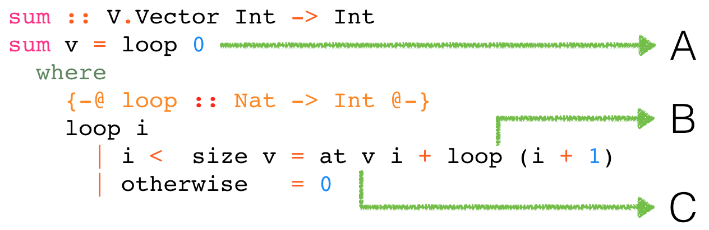

{-@ LIQUID "--no-termination" @-}
{-@ LIQUID "--short-names" @-}
module Examples
( sum
, sum'
, sum''
, range
, binarySearch
-- , average
-- , length
)
where
import Prelude hiding (map, sum, length, (!))
data Vector a
at :: Vector a -> Int -> a
at = undefined
size :: Vector a -> Int
size = undefined
-- {-@ range :: lo:_ -> hi:{lo <= hi} -> [{v:_ | lo <= v && v < hi}] @-}
Case Study: Vector Bounds
Goal: Whirlwind Overview
Specifications
Verification
Inference
Collections & HOFs
Case Study: Vector Bounds
Goal: Whirlwind Overview
Specifications
Verification
Inference
Collections & HOFs
Case Study: Vector Bounds
Goal: Whirlwind Overview
Specifications
Property: In-bounds Array Access
Case Study: Vector Bounds
Goal: Whirlwind Overview
Specifications
Property: In-bounds Array Access
{-@ measure vlen :: Vector a -> Int @-}
An uninterpreted function describing the size of a Vector
Specifications: Pre-Conditions
What does a function require for correct execution?
Specifications: Pre-Conditions
What does a function require for correct execution?
{-@ at :: vec:Vector a -> {i:Nat| i < vlen vec} -> a @-}
Refinement on the function’s Input Type
Input index must be between 0 and the size of vec
Specifications: Post-Conditions
What does a function ensure about its result?
Specifications: Post-Conditions
What does a function ensure about its result?
{-@ size :: vec:Vector a -> {n:Nat | n == vlen vec} @-}
Refinement on the function’s Output Type
Returned value equals the size of the input vec
Case Study: Vector Bounds
Goal: Whirlwind Overview
Specification
Verification
Inference
Collections & HOFs
Verification: Vector Sum
sum :: Vector Int -> Int
sum v = loop 0
where
{-@ loop :: Nat -> Int @-}
loop i
| i <= size v = at v i + loop (i + 1)
| otherwise = 0
Exercise: Does the above verify? If not, can you fix it so it does?
Verification: Vector Sum

Verification: Vector Sum
Verification Conditions
\[\begin{array}{lll}
\True
& \Rightarrow v = 0
& \Rightarrow 0 \leq v
& \mbox{(A)} \\
0 \leq i \wedge n = \mathit{vlen}\ v \wedge i < n
& \Rightarrow v = i + 1
& \Rightarrow 0 \leq v
& \mbox{(B)} \\
0 \leq i \wedge n = \mathit{vlen}\ v \wedge i < n
& \Rightarrow v = i
& \Rightarrow 0 \leq v < \mathit{vlen}\ v
& \mbox{(C)} \\
\end{array}\]
Case Study: Vector Bounds
Goal: Whirlwind Overview
Specification
Verification
Inference
Collections & HOFs
Inference
The more interesting your types get,
the less fun it is to write them down.
-- Benjamin Pierce
Inference: Vector Sum
sum' :: Vector Int -> Int
sum' v = loop 0
where
{-@ loop :: _ -> _ @-}
loop i
| i < size v = at v i + loop (i + 1)
| otherwise = 0
Inference: Vector Sum
Not magic, just Abstract Interpretation
Inference: Vector Sum
Not magic, just Abstract Interpretation
Represent unknown refinements with \(\kvar{}{\cdot}\) variables …
\[\begin{array}{lll}
\True
& \Rightarrow v = 0
& \Rightarrow \kvar{}{v}
& \mbox{(A)} \\
\kvar{}{i} \wedge n = \mathit{vlen}\ v \wedge i < n
& \Rightarrow v = i + 1
& \Rightarrow \kvar{}{v}
& \mbox{(B)} \\
\kvar{}{i} \wedge n = \mathit{vlen}\ v \wedge i < n
& \Rightarrow v = i
& \Rightarrow 0 \leq v < \mathit{vlen}\ v
& \mbox{(C)} \\
\end{array}\]
Inference: Vector Sum
Horn Constraints
\[\begin{array}{lll}
\True
& \Rightarrow v = 0
& \Rightarrow \kvar{}{v}
& \mbox{(A)} \\
\kvar{}{i} \wedge n = \mathit{vlen}\ v \wedge i < n
& \Rightarrow v = i + 1
& \Rightarrow \kvar{}{v}
& \mbox{(B)} \\
\kvar{}{i} \wedge n = \mathit{vlen}\ v \wedge i < n
& \Rightarrow v = i
& \Rightarrow 0 \leq v < \mathit{vlen}\ v
& \mbox{(C)} \\
\end{array}\]
Types are an Algorithm for Generalization and Instantiation
Refinement Types and Collections
Types are an Algorithm for Generalization and Instantiation
Generalization
Lift properties from single value to whole collection
e.g. from individual values to whole collection in range
Refinement Types and Collections
Types are an Algorithm for Generalization and Instantiation
Generalization
Lift properties from single value to whole collection
e.g. from individual values to whole collection in range
Instantiation
Apply properties from whole collection to single value
e.g. from whole collection to individual index in sum
Case Study: Vector Bounds
Recap: Whirlwind Overview
Specifications
Verification
Inference
Collections & HOFs
Putting it All Together: Binary Search
binarySearch :: Ord a => a -> Vector a -> Maybe Int
binarySearch x v =
if size v == 0
then Nothing
else loop x v 0 (size v - 1)
loop :: Ord a => a -> Vector a -> Int -> Int -> Maybe Int
loop x v lo hi = do
let mid = lo + ((hi - lo) `div` 2)
if x < (at v mid)
then do let hi' = mid - 1
if lo <= hi'
then loop x v lo hi'
else Nothing
else if (at v mid) < x
then do let lo' = mid + 1
if lo' <= hi
then loop x v lo' hi
else Nothing
else Just mid